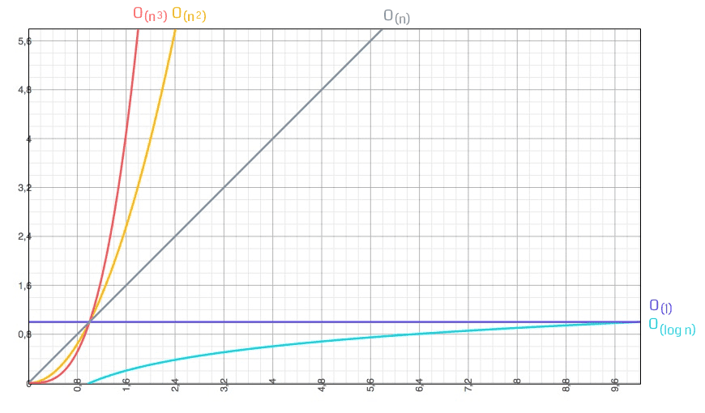
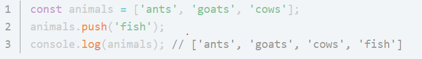
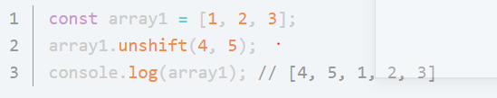

Tugas 2 TBO
Big-O Notation
Apa itu Big-O Notation ?
Sekilas Tentang Big-O Notation
Big-O Notation adalah sebuah cara atau metode untuk melakukan analisa terhadap sebuah algoritma pemrograman terhadap waktu eksekusi.
Tentang seberapa efisien dan kompleksitas barisan kode dalam dimensi waktu.
Di dalam sebuah program komputer pada umumnya, kita sudah lazim dengan istilah masukan-proses-keluaran.
Big-O Notation merupakan skenario terburuk dari sebuah algoritma, dan biasanya terdapat notasi n yang merepresentasikan jumlah masukan. Berikut adalah diagram notasi O besar dengan masukan yang dimulai dari 0 hingga tak terhingga.

Para developer biasaanya mendifinisikan tingkat kerumitan code atau algoritma yang kita buat mengunakan big o notasi ini. Dengan demikian, hal ini memudahkan cara berkomunikasi yang baik antar programmer dalam membahas kerumitan suatu algoritma.
Kegunaan
Penerapan Big-O Notation untuk menganalisa efisiensi suatu algoritma. Big-O Notation biasa disebut juga Notasi Landau (Landau Notation) atau Notasi Asimptotik (Asymptotic Notation) – adalah notasi matematika yang digunakan untuk menggambarkan sifat suatu fungsi asimptotik. Hal ini dilakukan untuk mengamati sifat/kecenderungan suatu fungsi untuk masukan (input) yang sangat besar/sangat kecil dengan cara yang simpel namun teliti sehingga dapat dilakukan perbandingan dengan fungsi-fungsi yang lain Lebih jauh lagi, simbol O digunakan untuk mengambarkan sebuah batas atas dari asimptotik suatu jarak/ukuran dari sebuah fungsi untuk fungsi yang lebih simpel.
- Kompleksitas Algoritma
- Kinerja CPU
- Kinerja Memori
- Kinerja Disk
- Kinerja Jaringan
- Performa:
- Kompleksitas:
Sebuah pertanyaan yang sering muncul adalah “Seberapa efisienkah suatu algoritma atau potongan kode?” Efisiensi tergantung dari beberapa hal, diantaranya:
Semua aspek tersebut sangat penting, tapi disini akan membahas mengenai poin pertama, yaitu CPU.
Berhati-hatilah ketika membandingkan antara
Berapa banyak waktu / memori / disk yang digunakan ketika program berjalan. Tergantung dari mesin, compiler, dan kode.
Apa yang akan terjadi ketika ukuran masalah semakin besar. Kompleksitas memengaruhi performa, namun tidak sebaliknya. Waktu yang diperlukan untuk melakukan suatu baris kode/algoritma sebanding dengan operasi dasar yang dilakukan.
Beberapa algoritma melakukan jumlah operasi yang sama dalam setiap kali pemanggilannya. Algoritma seperti ini dikatakan memerlukan waktu yang konstan. Beberapa algoritma lain melakukan jumlah operasi yang berbeda, tergantung dari jumlah masukan pada parameter-nya. Misalnya, algoritma pemanggilan berurutan (sequence), jumlah operasi yang dilakukan tergantung dari jumlah pemanggilan. Parameter yang nilainya memengaruhi jumlah operasi yang dilakukan disebut problem size atau input size.
Contoh
Mari kita melihat contoh Big-O Notation dari fungsi, ekspresi dan operasi JavaScript yang sederhana.
- Array.push()
- Array.unshift()
push() merupakan sebuah metode untuk menambahkan item baru kedalam sebuah array. Item yang ditambahkan akan berada diakhir array tersebut. Contoh penggunaan dapat dilihat sebagai berikut.
Apakah notasi yang tepat untuk baris kode animals.push('fish');? Karena metode push() tidak peduli dengan seberapa banyak atau sedikit jumlah item yang ada, artinya operasi yang berjalan tetap sama, maka metode push() ini dapat diwakilkan dengan notasi O(1) atau konstan.
unshift() adalah sebuah metode untuk menambahkan satu atau beberapa item ke bagian awal dari sebuah array. Contoh penggunaannya sebagai berikut.
Sekilas operasi unshift() ini terlihat seperti operasi yang konstan seperti push() dan pop() namun jika kita melakukan implementasi ulang metode ini, maka akan terlihat notasi yang sebenarnya. Berikut kira-kira implementasi dari unshift(), implementasi naif tentunya sekedar gambaran.
 2PNG.PNG)
Hal yang menambah kompleksitas adalah ketika kita harus mengubah indeks dari array karena kita akan menempatkan item baru di indeks ke-0. Secara otomatis indeks akan bergeser sebanyak satu langkah. Dan karena itu kita menggunakan pengulangan for hingga menjadikan operasi unshift() dapat diwakilkan oleh notasi linear atau O(n).
Kesimpulan
Sebagai kesimpulan, Big-O Notation merupakan metode untuk menghitung kompleksitas dari potongan kode yang kita buat. Sehingga dapat menumbuhkan kesadaran kita untuk mencari alternatif yang lebih baik sebelum data semakin besar dan berdampak kepada performa aplikasi yang kita buat.
Big-O Notation inipun tidak hanya semata berlaku di bagian kode yang kita tulis, namun di database pun berlaku. Jadi proses pengambilan data di database dengan sintaksis SQL yang dapat dianggap sebagai proses perulangan akan sangat tidak efektif jika di bagian algoritma kode kita kembali menggunakan perulangan. Maka proses tersebut akan menjadi O(n2) karena akan terdapat perulangan didalam perulangan.
Tanpa menggunakan indeks database melakukan yang disebut dengan “Sequential Scan”. Beberapa yang lain menyebutnya dengan istilah “Full Table Scan” yang kurang-lebih melakukan perulangan setiap barisnya dan membandingkan dengan argumen query yang kita tentukan.
Dengan kata lain operasi sequential seperti contoh diatas dapat kita beri notasi O(n). Seiring bertambahnya jumlah data, efisiensi akan semakin menurun.